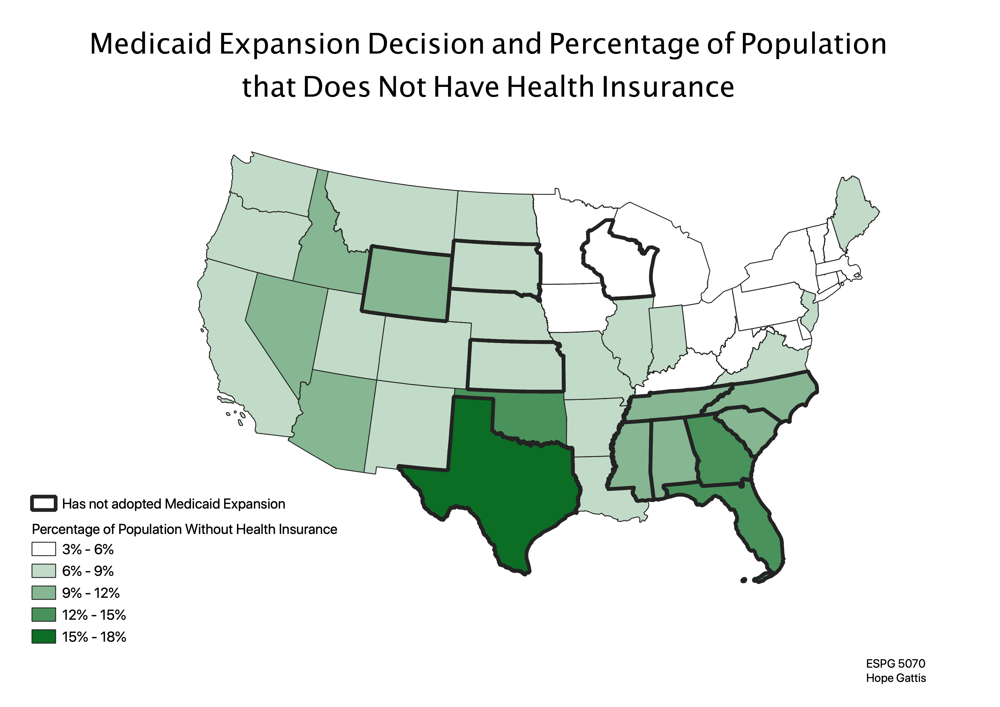

This map shows the percentage of each states population that does not have health insurance coverage. It also shows which states have chosen not to adopt Medicaid Expansion as of August, 2020. I chose this topic because I am very interested in the intersection between policy and healthcare. The map is shown in projection ESPG 5070 because this projection has low distortion of the lower 48 states.
